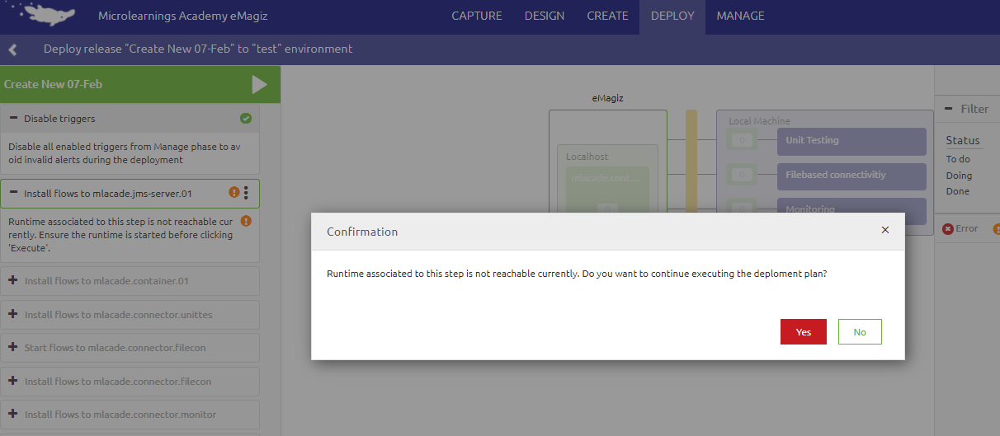

microlearning/crashcourse-platform-deploy-execute-deployment-plan
Actualize properties
In this microlearning we will focus on situation where a existing property needs a change of value and how to put this value into effect in your environmemt.
Should you have any questions, please contact academy@emagiz.com.
- Last update: February 9th 2021
- Required reading time: 3 minutes
1. Prerequisites
- Basic knowledge of the eMagiz platform
- Understanding of Releases and how to setup a Deployment plan
- Edit rights for your environment in Deploy
- A change made in a flow version that is added to a release so you can try it yourself
2. Key concepts
This micro learning centers around the execution of a Deployment plan. The deployment plan is a series of steps that need to be executed on any TAP environment to make the release defined active inside the eMagiz runtimes. Active in a sense that all changes made to the release compared to the running environment before executing the deployment plan are applied effectively.
3. Execute a Deployment plan
Provided there is a deployment plan, the execution is initialized from the Releases section. The button highlighted in the figure above is the button to start the deployment plan. The page below is then displayed as an example of the page that shows the progress of the deployment steps. Pressing the green play button will start the execution of the deployment plan.
Some key notes to consider during the execution of the plan
- Only the changed, added or deleted flow will be considered for a deployment. No change means that the current flow remains untouched
- The runtime that requires updates has be started / active before anything can be deployed. See screenshot below to see what happens if the runtime is not running at the moment of execution
- The middle section showing the integration landscape is highlighting in what system a deployment of flow is happening
- The right hand panel shows the log messages from the runtimes where the deployment(s) of flows are taking plance
- A message will be displayed that the deployment is completed
- The deployment plan will be default cleanup old versions of flow (unless specified otherwise in the settings of the deployment plan).

4. Assignment
Try to deploy a plan using an active release and observe the results taking the above points into account.
5. Key takeaways
- The execution of a deployment plan is a smooth process to avoid manual deployments of flows
- Be aware if the specific considerations involved
- Tune the deployment plan continuously to make it better all the time.
6. Suggested Additional Readings
If you are interested in this topic and want more information on it please read the helptext provided by eMagiz when executing these actions.
7. Silent demonstration video
This video demonstrates how you could have handled the assignment and gives you some context on what you have just learned.